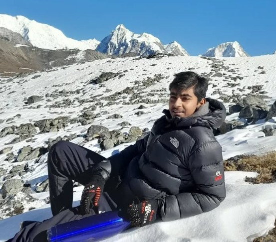
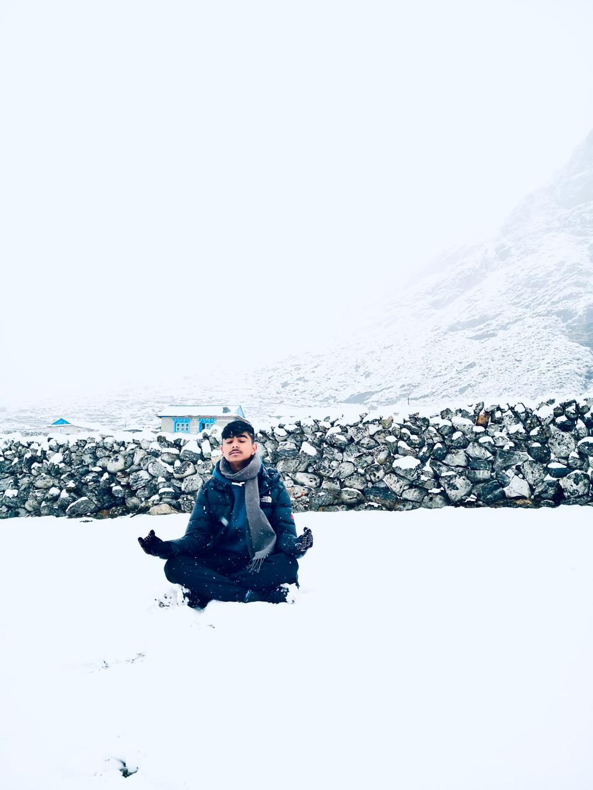
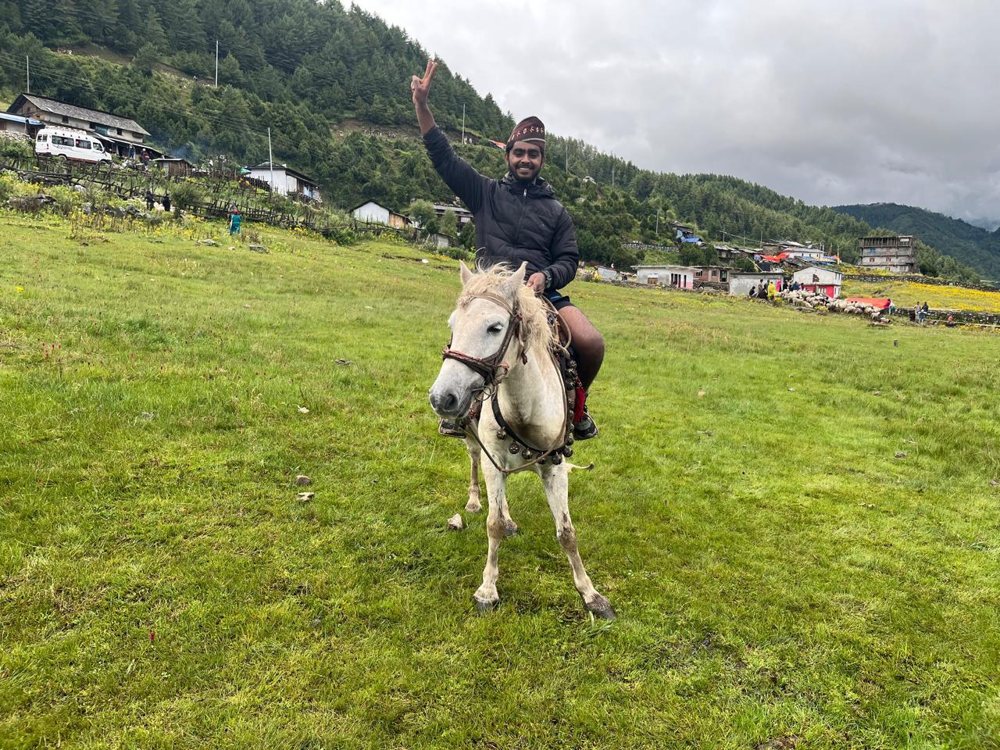
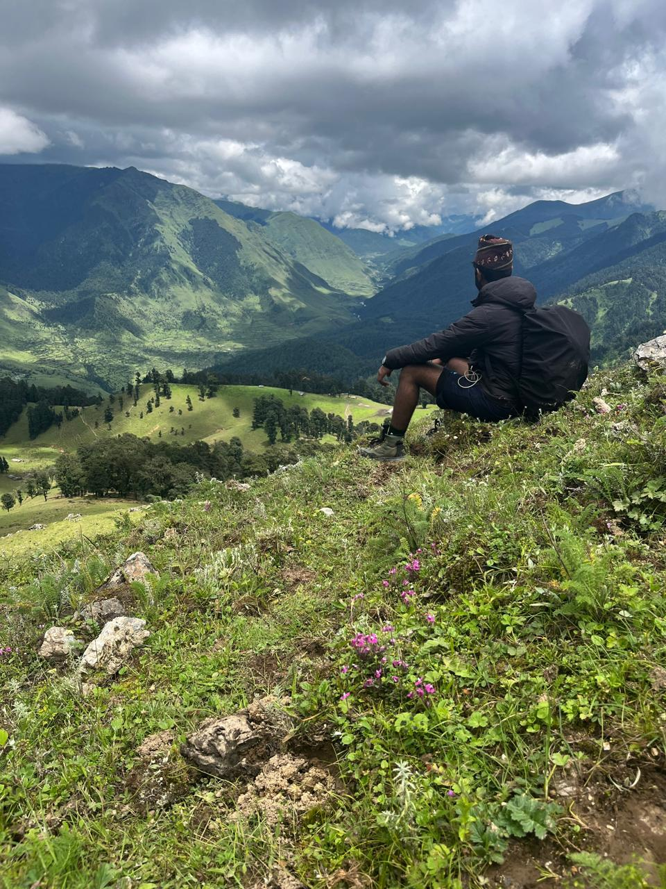

A Masterclass in Career Transformation
Originally captivated by the innovative potential of Information Technology, a pivotal counseling session redirected my analytical mindset toward the financial architecture of Nepal. Today, I am dedicated to bridging my technical curiosity with financial rigor, believing that the future of business leadership belongs to those who master the "CA Attitude"—that unique blend of precise knowledge and professional integrity.

The Academic Odyssey
ICAN Chartered Accountancy (CAP II)
Securing the All Nepal Rank 3 in the CAP II examinations was not merely an academic success; it was a grueling test of endurance. This phase involved mastering over 8,000 pages of technical curriculum, ranging from the intricacies of NFRS (Nepal Financial Reporting Standards) to complex Corporate Tax structures. This rank solidified my reputation as a strategist capable of high-level conceptual clarity under immense national pressure.
The journey required a monastic level of discipline—studying 14 hours a day to decode the nuances of Audit Assurance and Financial Management. This experience forged my professional identity, teaching me that accuracy is the baseline, but strategic insight is what creates real value in the financial world.
Bachelor in Business Studies (BBS)
Managing my 3rd Year at Tribhuvan University alongside the CA journey has provided me with a unique dual-lens perspective. While CA provides technical depth, BBS offers a broader look at organizational behavior, macro-economics, and the psychological pillars of business management. Maintaining high marks in my 1st and 2nd years proved my ability to balance two demanding academic paths simultaneously.
This academic synergy allows me to approach financial problems not just as an enthusiast, but as a management professional. I have focused my research during these years on the liquidity challenges of Nepalese banks and the impact of digital transformation on traditional accounting cycles.
GoldenGate International College, Kathmandu
At GoldenGate, I secured A+ marks in +2 Management, which served as my gateway into the professional elite. The college's high-pressure environment served as a laboratory where I first experimented with advanced time-management techniques and analytical modeling. It was here that my passion for finance surpassed my interest in IT, as I realized that numbers tell the most important stories in any economy.
Shree Prabha Secondary School, Baglung
Coming from a government-led school in Baglung, my A+ in SEE is a testament to the fact that ambition is the greatest equalizer. Lacking the high-end resources of urban private schools, I relied on pure intellectual curiosity and self-study. This chapter taught me the value of "Humble Grit"—the ability to work harder than everyone else to achieve national-level recognition.
Professional Exposure
Training at
SAR & Associates
I have spent my professional tenure at SAR & Associates deep-diving into the financial engines of Nepal, ensuring transparency and growth for the nation's most critical organizations.
Banking & Financial Institutions
I have analyzed the risk-weighted assets and internal control frameworks of prominent Nepalese banks. My work involved testing the effectiveness of core banking systems and ensuring that every transaction aligns with Nepal Rastra Bank (NRB) directives. This exposure has given me a front-row seat to how the nation’s liquidity is managed and protected.
Government & Public Governance
My work with government clients focused on fiscal accountability. I have audited public sector entities to ensure that taxpayer funds are utilized with maximum efficiency and absolute constitutional compliance. This role requires an unwavering commitment to integrity and a deep understanding of the public procurement laws of Nepal.
INGOs & International Reporting
Working with International NGOs requires a delicate balance of fund efficiency and donor compliance. I ensure that international aid is accounted for with 100% accuracy, providing assurance to global donors that their contributions are creating the intended social impact while meeting international accounting standards.
Personal Resilience
Langtang Valley Trek
Traversing the Langtang region was more than a trek; it was a meditation on recovery. After the earthquake, the valley's resilience mirrored my own professional journey. Standing at Kyanjin Ri (4,773m), I realized that every uphill climb requires a steady rhythm and a clear destination.
Every step in the alpine terrain taught me about oxygen management—just as I manage mental energy during three-hour professional exams. It is about pacing, not just speed.


Tsho Rolpa Glacier Trek
Navigating the route to one of Nepal’s highest glacial lakes (4,580m) was a masterclass in risk management. The rugged terrain of the Rolwaling Valley demands extreme focus and physical preparation. The thin air and the sheer silence taught me the importance of "Composure under Pressure."
Standing before the turquoise waters, you realize that nature doesn't negotiate; you must adapt. This adaptability is my core strength in the ever-changing tax laws of our country.
Dhorpatan Hunting Reserve
Exploring the unique high-altitude plateaus of Dhorpatan allowed me to find perspective away from the ledger. The vast wilderness and the strategic planning required to navigate this remote reserve reinforced my belief that a leader must find clarity in silence.
The vast grasslands taught me about the "Big Picture"—seeing the horizon before diving into the microscopic details of a balance sheet.


Chaurikharka Expedition
Entering the heart of the Khumbu region allowed me to witness the sheer grandeur of Everest. This journey was about stamina—maintaining high performance over long periods. The thin air of the Everest region is a metaphor for the competitive top-tier of the CA profession.
It taught me that reaching the base is just the beginning. The goal is always higher, and the preparation must be deeper than the climb itself.
I have also explored the beauty of Mustang, Pokhara, Lumbini, and Ghandruk. Each destination adds a layer to my character, making me a well-rounded professional.
Featured Podcast
Dialogue on Strategy
In this episode, I share my journey from Baglung to becoming a rank holder, and my perspective on the future of finance leadership in Nepal.
Watch Episode